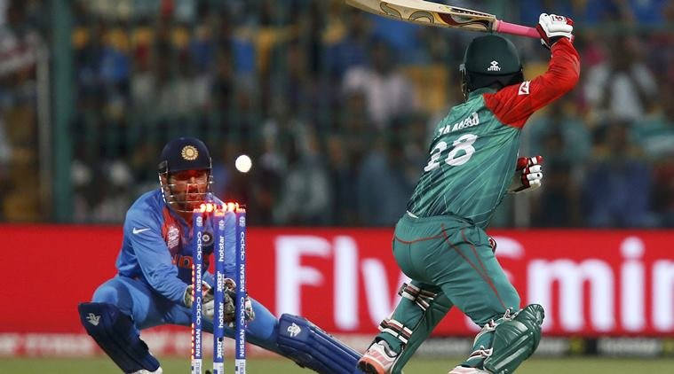

Dhoni was born in Ranchi, Bihar (now in Jharkhand),`and he identifies as a Hindu Rajput.` His paternal village Lwali is in the Lamgara block of the Almora District of Uttarakhand. Dhoni's parents moved from Uttarakhand to Ranchi, where his father Pan Singh worked in junior management positions in MECON. Dhoni has a sister Jayanti Gupta and a brother Narendra Singh Dhoni.` Dhoni is a fan of Adam Gilchrist, and his childhood idols were cricket teammate Sachin Tendulkar, Bollywood actor Amitabh Bachchan and singer Lata Mangeshkar` Dhoni studied at DAV Jawahar Vidya Mandir, Shyamali, Ranchi, Jharkhand where he initially excelled in badminton and football and was selected at district and club level in these sports. Dhoni was a goalkeeper for his football team and was sent to play cricket for a local cricket club by his football coach. Though he had not played cricket, Dhoni impressed with his wicket-keeping skills and became the regular wicketkeeper at the Commando cricket club (1995�1998). Based on his performance at club cricket, he was picked for the 1997/98 season Vinoo Mankad Trophy Under-16 Championship and he performed well.` Dhoni focused on cricket after his 10th standard.[22] Dhoni was a Travelling Ticket Examiner (TTE) at Kharagpur railway station from 2001 to 2003, under South Eastern Railway in Midnapore (W), a district in West Bengal.` His colleagues remember him as a very honest, straightforward employee of the Indian Railways. But he also had a mischievous side to his personality. Once, while staying at the railway quarters, Dhoni and a couple of his friends covered themselves in white bedsheets and walked around in the complex late in the night. The night guards were fooled into believing that there were ghosts moving around in the complex. The story made big news on the next day.
Hailing from Jharkhand, Mahendra Singh Dhoni�s rise through the ranks into international cricket is a tale of rebellion, extraordinary merit, perseverance, and, most of all, belief. After being scouted on the whims of his school P.E. teacher as a wicketkeeper, Dhoni created whispers in the cricketing circles of Ranchi - a teenaged boy with no measurable upper-body strength clearing boundaries against some of the best fast bowlers of the district. However, the system failed him as he found it difficult to make the cut against candidates of the more affluent A-tier states. Consequently, in a desperate move, he joined the Railways Ranji team and started to work as a ticket collector at the Kharagpur railway station to make ends meet.
Nevertheless, in a few months, the stars started to align themselves for the precocious wunderkind from Ranchi. Inspired by the KSCA, the BCCI started a country-wide Training Research Development Wing to scout talent from the more financially backward states. Dhoni immediately caught the eyes of the scouts and was sent on an A tour to Kenya, where his talent burst forth for the world to see as he showcased his batting pyrotechnics against world-class bowlers in alien conditions. He immediately shot to national reckoning and was selected for the tour of Bangladesh in November 2004.
By then a broad 22-year-old with long locks, Dhoni�s India career got off to an inauspicious start, as he scored a duck in his first ODI and a string of low scores followed. However, the selectors and the then-captain Sourav Ganguly decided to persist with him and gave him an extended run. Dhoni repaid their faith with an exhibition of his charisma and audacious stroke-play in his fifth ODI against Pakistan, who certainly didn�t see the butchery coming, as he butchered his way to 148 at Vishakhapatnam. Later in 2005, he went one step further bludgeoning his way to a brutal 183* in Jaipur to make a mockery of a 300-run chase against a Sri Lankan attack that looked aghast at his bizarre-but-effective stroke-play and the unparalleled physical power that he imparted on the ball.
As a wicket-keeper and a captain, what would you do when the opposite team needs 2 runs off 3 balls and defeat is staring you in the face? Show aggression? Lose hope? Scream? No, you keep calm and wait for them to make mistakes. This requires patience but pays off well. The match I am talking about is India's Super 10 Group 2 clash against Bangladesh in the T20 World Cup, 2016. Bangladesh needed 11 runs in the final over and managed to amass 9 in the first 3 balls. They were going to win. Except, they didn't. In the next two deliveries, they lost two consecutive wickets and now had the task of scoring 2 runs in 1 ball. 